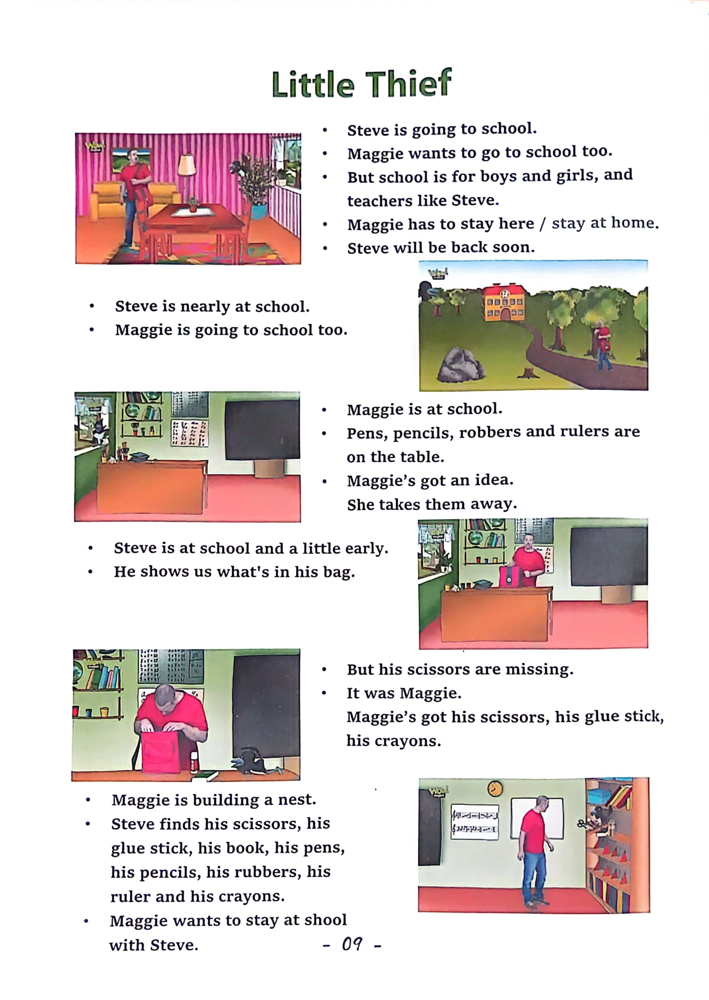

Day 9
Unit 4 · story
教材重点
教材重点依据网盘文件“第四级绿色每日打卡全.pdf”，PDF 第 11 页对应 Day 9；以原图为准，避免对图片文字做不可靠的自动识别。
网盘教材重点原图 · PDF 第 11 页对应 Day 9

Unit 4 · story · 6–7岁
see · time · say · can
Hello, hello, my name's Steve.
台词本为机器转写，可能存在识别误差；不等同于视频逐字原声。
详细内容
Part 1 核心词汇
必须掌握 · 4 个Part 2 跟读句型与句型拓展
左侧保留台词本原句，右侧为替换练习；拓展内容不是视频逐字台词。
Hello, hello, my name's Steve.
It's time to play. It's time to play in English.
Swing slide.
Roundabout.
Climbing frame, hand, sand pits, four, three, two, one coming ready or not. Oh, hey,
Part 3 台词本全文
来源：第4级台词本 · 009.Wow!Green - Unit 4 story1.pdf。以下保留网盘 PDF 的机器转写文本，仅清理了文件路径页眉和空行。
Hello, hello, my name's Steve.
It's time to play. It's time to play in English.
Swing slide.
Roundabout.
Climbing frame, hand, sand pits, four, three, two, one coming ready or not. Oh, hey,
Hello, boys and girls, I'm playing hide and seek with Maggie. Can you see her.
No, hey, I think she's under the slide, hey, let's go and surprise her. Come on.
SH, we have to be quiet because Maggie's hiding under the slide. Hey.
You know what the slide is, don't you?
No, look, this is a slide.
Hey, say it with me, it's a slide, come on. It's.
Ah, slide, let me hear you, it's a slide. Yeah.
And Maggie's hiding under the slide here we go watch this. Are you ready? Maggie, I say, who who.
Hey, she's not under the slide.
What's going on?
I guess I was wrong, maggie isn't under the slide, so where is she.
I need your help. Can you see her.
Oh, ha, HA, I think I can see her over there in the sand pit.
Oh, that must be Maggie over there in the sand pit.
What, oh, what.
You don't know what a sand pit is, this is a sand pit. Hey, say it with me, what is it.
It's a sand pit. Come on, it's a sand pit. What is it.
It s.
Ah, sand pit, that's right, okay, time to surprise Maggie.
Okay, maggie, I see you. Oh,
Hey, I was wrong again. I was sure Maggie was in the sand pit.
Oh, well, where is she Can you see Maggie anywhere.
Hey, is that her over there on the climbing frame Let's go and see.
Yeah, yeah, that's definitely Maggie up there on the climbing frame.
What's a climbing frame?
/
-
/4/009.Wow!Green - Unit 4 story1.txt[2022/3/29
星期二
6:49:28]
This is a climbing frame, hey, say it with me, what is it.
It's a climbing frame, come on, it's a climbing frame, and again, it's.
Climbing frame, that's right, okay, time to catch Maggie, he'll go, HA, HA, HA, got you.
Hey, that's not Maggie.
It's a cap.
Oh, I guess I was wrong again. Maggie isn't.
On the climbing frame, hold away. That's not mine.
Oh, I don't know. So Maggie wasn't under the slide. She wasn't in the sand pit or on the climbing frame.
Oh, I give up. I'm going to sit down here on this roundabout.
Oh, what, you don't know what a roundabout is.
This is a roundabout, staying with me, it's a roundabout, it's a round welcome on.
It's a roundabout, that's right.
HO, but where's Maggie?
I think she must be using her magic, and that's naughty. Hey, can you see Maggie anywhere.
What.
She is under the roundabout, really, oh, hey, maggie, stop using Maggie.
Magic now? Hey?
Oh,
Where am i? Oh, I'm on a swing.
You know what a swing is, don't you This is a swing. Hey, say it with me, what is it.
It's a swing, and again, what is it It's a swing one more time. What is it.
It's a swing, that's right. But.
How do I get down? Maggie, maggie,
Oh, what a naughty, naughty bird. See you next time. Bye bye.